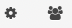

Important
After finishing a course, make sure you archive the course results and exercises as described so you can forever locally access your student results and exercises without access to the OpenTA server. zip files can are fragile and and rezipped files might not be compatible. Make sure you have the original zip file available if you unzip. Just to be sure your unzip does not remove the zip file, make a copy of the zip file and unzip that to inspect the contents.
1) Archive your finished course¶
Create a complete zip file to archive all exercises and student results to archive your old data and course results. This file is confidential since it includes student results.
Press Home () on the toolbar and if necessary () to bring up the menu bar:
{kind=link}
Then press
Server

Press
Exportto generate and download the zip. The size depends completely on the course and can be 2Gb if a large number of students have submitted work.Store the file safely. The archive can be used to install the course on another OpenTA instance.
Make a scratch copy of the downloaded file and unzip the copy.
The archive contains the results, exercises and student submissions.
Run the command python3 -m http.server at the root of unzipped directory. The contents can then be browsed on http://localhost:8000. Browse the archive before to make sure you have what you need.
2) Archive your finished exercises¶
Create zip file of only your exercises intended to be shared or exported to a brand new course. No student data is included; exercises only and could be shared with others who want to use your exercises.
Press Home () on the toolbar and if necessary () to bring up the menu bar:
{kind=link}
Press
Course
{kind=link}
Now press
Export exercisesand download and save the zip file and make a copy that you can unzip.
Unzip the zip copy. By running the command python3 -m http.server at the root of the downloaded exercises directory, the contents can be browsed on https://localhost:8000. The directory contains the exercises together with information about meta data such as published or not. The zip file can reimported to a scratch course to create a new instance, such as would be created when the same course is taught again. No user or student information is included.
3) Duplicate when you teach the course again.¶
The easiest path to starting up the new course based on the old is duplicating the course on the same OpenTA server. You don’t need the zip files, but you should download and save them anyway to ensure all future access to your exercises and data.
Press Home () on the toolbar and if necessary () to bring up the menu bar:
Press
Course
Press
DuplicateA new course name is suggested; change it to what you want , then pressCreate the new course.When the server indicates its done, logout of the old course.
log in to the new course with your present login and password. Admins will be migrated wwhereas no students are imported. Dates and exercise options are left unchanged.
Use
Course -> Modifyto shift the dates typically by 52x7 = 364 days. Or wipe due dates clean by deselecting deadline_date.Uncheck the course options you don’t want to keep.
Click
Click here to modify ...Look over your course using the the cog and users icons in the toolbar 
{kind=link}
3b) Setting up your new course with Canvas¶
Important
Login to OpenTA using your Admin credentials, same as your old course.
Press
Courseand thenOptions
If
Use ltiis unchecked, check it andSaveand reloadOptions.Copy the following three fields ; you need to paste them into canvas
Urli.e. ‘’Config url’’ field starting with ‘https’ and ending with ‘/config_xml’Lti keyLti secret
Warning
You must have Canvas “Course Designer” privileges to add OpenTA to Canvas; being only Examiner is not enough. Provide the role of Course Designer to yourself and/or somebody else. This is done in Canvas by checking People in the left Canvas navigation column, then checking +People in the top right Canvas Navigation bar. Then choose Course Designer , add your email and click Next then AddUsers. Check for the email. Log back in and accept the invitation.
Important
Now go to your course Canvas page and login using the account that is Course Designer:
Press
Settings, found furthest down in the left vertical navigation columnPress
Apps, found in the navigation bar at the top of the center frame.Press
View App Configurationsfound in the title bar- Press
+Appin the refreshed title bar. If this does not appear you may not have the role CourseDesigner See instructions in green above.
- Press
Select
By URLas configuration typePut in a name such as
Open TAin ‘Name’Put in the
Lti keyyou copied above into ‘Consuer key’Put
Lti secretyou copied above into ‘Shared Secret’Put in
Urlyou copied above into ‘Config URL’Press
Submit. Hopefully success is confirmed by Canvas. If not, suspect incompletely copied key or secret and try againGo back to the Canvas page and refresh. If ‘Open TA’ appears in the left navigation column you succeeded.
Press
OpenTAin the left navigation column. If everythning is set up correctly, you will open up the course page. Close the OpenTA window within Canvas and make sure it returns.
If OpenTA is now opening in a Canvas frame, make sure students can open up a frameless window.
Go back in canvas and press
AppsPress
Add AppGive it name
OpenTA-framelessGive it the redirect consisting of
Urlup to but not including the ‘/lti_config_xml/’Check all the boxes so it will appear in relevant menus
Check ‘Add App’ and refresh the Canvas page
In order to let student log in, you must move the newly added apps to make them visible.
In Canvas, press
Settingsin the left navigation columnPress
Navigationin the center navigation barDrag ‘OpenTA’ and ‘Redirect Tool’ to either hidden or view configuration.
Press
Save
When you make the Canvas OpenTA link visible to students, keep in mind that since the course is cloned, students will immediately get access to published exercises. If you want more restricte access you have several options.
Log in directly as Admin to OpenTA Do not go through Canvas; your canvas identity is not admin
You can either unpublish the course in the
OpenTA -> Course -> Optionsor unpublish all exercises inOpenTA -> Course -> Modify
Ask your course assistants to log in through Canvas
After course assistants are logged on, escalate them and yourself to Admin by pressing the Student icon in OpenTA
Admins should not be escalated to superuser unless necessary
{kind=link}
4) Other ways of migrating a course¶
4a) Starting a completely based on zipped exerises.¶
These instructions describe how you would start a new course with exercises that was saved in 2), either by yourself or from a colleague.
Create an example exercise in the new course.
Press
Course
Press
Import Exercises. Upload the zip file of exercises you created in 2). Exercises will be merged into to your new course resulting in a clean course with the old exercises, so you could merge exercises from two courses.
Important
Warning exercises are merged, and if the same exercies already exist there may be duplicates and you will get a big mess and cannot easily figure out which is the old version and which is the new. Rename your old exercises with new exerissenames or use alternate directories if you think you risk duplication. Safest of course is to start with an empty course.
For instance shifting the dates 364 days will often update the duedates by one year, respecting weeks. You can also select what metadata to preserve in the modifications.
4b) Moving a mature course to new OpenTA server¶
Should you need or want to migrate your entire running course to another OpenTA server or development server, follow these instructions.
Create a new empty course on the new server. Then access the the home toolbar in the new course
Press
Server
Press
Import. Upload OpenTA server zip file you created in 1). This will completely replace the newly created course with contents of the zip archive. You will not be able to recreate the course you just overwrote.